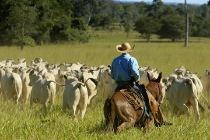
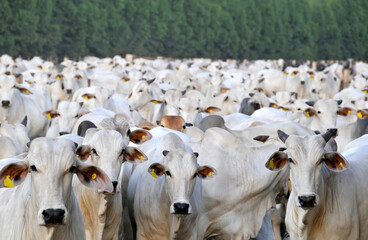
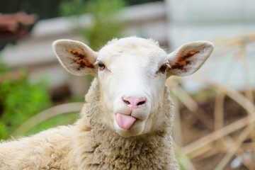
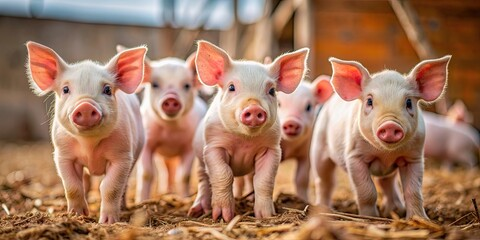
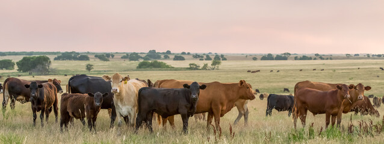
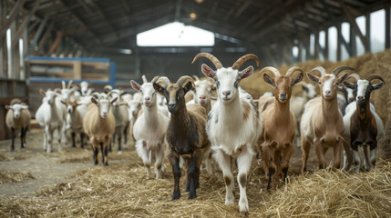

História da Pecuária no Brasil
A pecuária no Brasil tem uma longa história, que remonta ao período colonial. Os portugueses introduziram a pecuária no Brasil em 1532, com a criação da primeira fazenda de gado em São Vicente, no litoral de São Paulo.
Espécies de Animais no Brasil
-
Bovinos
O Brasil é um dos principais produtores de carne bovina do mundo. A raça Nelore é uma das mais comuns no país.
 -
Ovinos
A ovinocultura é outra atividade importante no Brasil, com uma produção de lã e carne de qualidade.
 -
Suinocultura
A suinocultura é uma atividade em crescimento no Brasil, com uma produção de carne de porco de alta qualidade.

Regiões Pecuárias do Brasil
-
Região Sul
A Região Sul do Brasil é conhecida por sua produção de carne bovina e ovina. Os estados do Sul, como o Rio Grande do Sul, Santa Catarina e Paraná, são responsáveis por uma grande parte da produção pecuária do país.
 -
Região Centro-Oeste
A Região Centro-Oeste do Brasil é conhecida por sua produção de carne bovina e suína. Os estados do Centro-Oeste, como Mato Grosso, Mato Grosso do Sul e Goiás, são responsáveis por uma grande parte da produção pecuária do país.

-
Região Nordeste
A Região Nordeste do Brasil é conhecida por sua produção de carne caprina e ovina. Os estados do Nordeste, como Bahia, Pernambuco e Ceará, são responsáveis por uma grande parte da produção pecuária do país.
